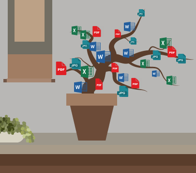

Following the success of the KonMari Method we now present DigiMari, your own digital version of Marie Kondo.
Let DigiMari into your computer and discover the magic of a clean digital space yourself.
Just like the KonMari method, DigiMari encourages tidying by category which helps you keep track of what your doing. To help you get started DigiMari will scan your computer to see where you would gain most on starting. Normally starting off by finding those important documents,
then moving on to emails, other documents and finally images. If a file sparks shame, laugh at it – then let it go.
People all around the world have been drawn to this new DigiMari concept due to its effectiveness and easiness.
Your own specialized DigiMari will help you create your own very special digital space where you can regain your confidence again.